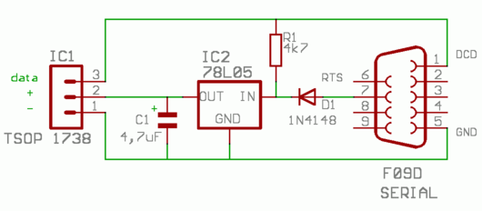

Для получения данных, передаваемых по ИК каким-нибудь устройством, например, пультом от телевизора, можно воспользоваться программой LIRC и обслуживающими ее модулями ядра. Кстати, программа LIRC портирована под Windows и прекрасно в нем работает. Называется WinLIRC.
Приемник я собирал по следующей схеме:

Датчик IC1 — марки TSOP 1738 или аналогичный. Вместо 78L05 (IC2) можно взять советский аналог КР142ЕН5 (левый вывод — вход, правый — выход, средний — заземляем). Диод D1 подойдет любой.
Чтобы получить данные, передаваемые через самодельный ИК-приемник, подключенный по COM-порту, нужно сделать следующее.
1. Установить пакет lirc.
2. Подключить ИК-приемник к COM-порту.
3. Дать команду освобождения COM-порта:
setserial /dev/ttyS0 uart none
4. Подключить драйверы ядра (запустить lirc_serial, и автоматом запустится lirc_dev):
modprobe lirc_serial
5. Проверить, загрузились ли драйверы ядра:
lsmod | grep lirc
6. После этих действий появится устройство /dev/lirc0.
7. Проверить, передаются ли данные через это устройство. Для этого выполнить нижеследующую команду и направить ИК-пульт на датчик, понажимать клавиши:
mode2 --device=/dev/lirc0
В консоли будут видны всякие коды, передаваемые ИК-устройством. Можно посмотреть сигнал в графическом виде:
xmode2 -d /dev/lirc0
Если этот шаг нормально выполнится, то отконфигурировать LIRC не представляет труда. Но если данных нет, LIRC трогать вообще бесполезно, так как это следующий уровень взаимодействия.
8. Настроить LIRC согласно инструкциям из интернета :)
Копия обсуждения на ЛОРе с выявлением подводных камней при конфигурировании LIRC
Обсуждение происходило здесь: https://www.linux.org.ru/forum/linux-hardware/2785416
Самодельный IR приемник и LIRC. В Windows работает, в Linux нет.
Здравствуйте!
Достал из своих загажников вот такой самодельный девайс
http://www.cesko.host.sk/girderplugin.htm
Через него видятся команды с пульта в винде через программу WinLIRC. А вот в линухе (Ubuntu 7.04) завести данный девайс не могу. Делаю все вот по этому HOWTO
https://help.ubuntu.com/community/InstallLirc/Feisty
И уткнулся в то, что не могу сгенерировать lircd.conf...
В данный момент, при запуске компа, в логе видна надпись
##################################################
## LIRC IS NOT CONFIGURED ##
## ##
## read /usr/share/doc/lirc/html/configure.html ##
##################################################
Если сразу после старта посмотреть
# dmesg | grep lirc или
# dmesg | grep LIRC
то ничего не показывается. Так же, следущие команды
# lsmod lirc
# ps aux | grep lirc
тоже ничего не показывают.
--------------------------------------------------------------------
Если запустить вот такой скрипт
setserial /dev/ttyS0 uart none
setserial /dev/ttyS1 uart none
modprobe lirc_dev
modprobe lirc_serial
/etc/init.d/lirc start
то в конце скрипта запуск демона lirc снова будет неудачным
##################################################
## LIRC IS NOT CONFIGURED ##
## ##
## read /usr/share/doc/lirc/html/configure.html ##
##################################################
Starting lirc daemon:.
Но после выполнения этого скрипта имеем
# dmesg | grep irc
[ 281.197664] lirc_dev: IR Remote Control driver registered, at major 61
[ 281.206875] lirc_serial: no version for "lirc_unregister_plugin" found: kernel tainted.
[ 282.209388] lirc_serial: auto-detected active high receiver
[ 282.209400] lirc_dev: lirc_register_plugin: sample_rate: 0
# lsmod | grep lirc
lirc_serial 13952 0
lirc_dev 16116 1 lirc_serial
# ps aux | grep lirc
Нет процесса
То есть вроде как все должно работать, только нужен нормальный файл /etc/lirc/lircd.conf. В интернете готового файла для моего девайса и управлялки не нашел. В HOWTO его предлагают сгенерировать через программу irrecord.
--------------------------------------------------------------------
И дальше идет непонятка. Мой девайс подключен к COM1 (/dev/ttyS0). В HOWTO написано, что надо запускать команду
# irrecord -d /dev/lirc0 lircd.conf
В какой момент появился девайс /dev/lirc0 я не знаю, и что он из себя представляет тоже непонятно. Это не ссылка, а файл устройства.
crw-rw---- 1 root root 61, 0 2008-05-28 14:11 lirc0
При запуске вышеприведенной команды, начинается процесс распознавания клавиш. То есть, доходим до диалога
Now start pressing buttons on your remote control.
It is very important that you press many different buttons and hold them
down for approximately one second. Each button should generate at least one
dot but in no case more than ten dots of output.
Don't stop pressing buttons until two lines of dots (2x80) have been generated.
Press RETURN now to start recording.
Нажимаем Enter, потом начинаю давить на разные (или на одну) кнопки с продолжительностью 1 сек. Вроде как должны появляться точечки на каждое нажатие, но они не появляются. Через 10 секунд появляется такое сообщение
irrecord: no data for 10 secs, aborting
irrecord: gap not found, can't continue
и програма заканчивается.
Если попытаться запустить эту команду с указанием COM1 (от рута)
# irrecord -d /dev/ttyS0 lircd.conf
то в ответ получаю
irrecord: could not init hardware (lircd running ? --> close it, check permissions)
Права на что нужно проверить? На файлы компортов? Они у меня такие
crw-rw---- 1 root dialout 4, 64 2008-05-28 18:07 ttyS0
crw-rw---- 1 root dialout 4, 65 2008-05-28 18:07 ttyS1
но под рутом как бы неважно, доступ должен быть полным...
Гдето-то нашел рекомендацию, что надо вообще компорт проверить. Дать команду
# cat /dev/ttyS0
и при нажатии кнопок на пульте, в консоль должен мусор сыпаться. Но у меня эта команда (под рутом и от обычного пользователя) тоже не выполняется
# cat /dev/ttyS0
cat: /dev/ttyS0: Input/output error
Вот. Не знаю больше куда рыть и что делать, чтобы считать хоть какой сигнал с компорта. Как же запустить это LIRC?
xintrea ★
28.05.2008 15:40:37

Re: Самодельный IR приемник и LIRC. В Windows работает, в Linux нет.
Судя по логам, прежде чем запустить, его нужно с начала сконфигурировать. :)
anonymous (28.05.2008 15:45:36)
Re: Самодельный IR приемник и LIRC. В Windows работает, в Linux нет.
>Гдето-то нашел рекомендацию, что надо вообще компорт проверить. Дать команду
># cat /dev/ttyS0
>и при нажатии кнопок на пульте, в консоль должен мусор сыпаться.
Судя по схеме если ты ее правильно собрал RxD в воздухе болтается так что сомневаюсь в этом совете...
# cat /dev/ttyS0
cat: /dev/ttyS0: Input/output error
Если порт уже занят другим процессом ничего другого и не получишь
koTuk ☆ (28.05.2008 16:14:44)
Re: Самодельный IR приемник и LIRC. В Windows работает, в Linux нет.
>> # cat /dev/ttyS0 >> и при нажатии кнопок на пульте, в консоль должен мусор сыпаться.
> Судя по схеме если ты ее правильно собрал RxD в воздухе болтается так что сомневаюсь в этом совете...
Да, наверно так и есть.
>> # cat /dev/ttyS0 >> cat: /dev/ttyS0: Input/output error
> Если порт уже занят другим процессом ничего другого и не получишь
Нет, дело видимо в другом. Такая ошибка возникает после команды # setserial /dev/ttyS0 uart none
А если дать команду # setserial /dev/ttyS0 uart 16550A
то такой ошибки не возникает. Но и в консоль через cat ничего не сыпится, но это видимо из-за однонаправленной схемы.
xintrea ★ (28.05.2008 17:05:35)
Re: Самодельный IR приемник и LIRC. В Windows работает, в Linux нет.
> Судя по логам, прежде чем запустить, его нужно с начала сконфигурировать.
Чтобы запустить irrecord (генератор конфига), надо этот конфиг уже иметь?? Что-то замкнутый круг получается.
Кто-нибудь может внятно сказать, какой файл девайса надо использовать при генерации конфига, если приемник подключен на COM1?
В HOWTO написано
# irrecord -d /dev/lirc0 lircd.conf
но с /dev/lirc0 данные не считываются.
А при попытке считывать с /dev/ttyS0
# irrecord -d /dev/ttyS0 lircd.conf
процесс создания конфига вообще не запускается (см. первый пост)
Что делать то?
xintrea ★ (28.05.2008 17:11:36)
Re: Самодельный IR приемник и LIRC. В Windows работает, в Linux нет.
/dev/lirc0 должен появлятся если загружены правильные модули для устройства. Возможно стоит поробовать загрузить все модули lirc.
anonymous (28.05.2008 17:27:11)
 Re: Самодельный IR приемник и LIRC. В Windows работает, в Linux нет.
Re: Самодельный IR приемник и LIRC. В Windows работает, в Linux нет.
Еще можно поробовать почитать документацию по irrecord. Там например написано: If the program fails to recognize the protocol of the remote control you should use the --force option to at least create a config file in raw mode.
anonymous (28.05.2008 17:29:15)
Re: Самодельный IR приемник и LIRC. В Windows работает, в Linux нет.
> /dev/lirc0 должен появлятся если загружены правильные модули для устройства. Возможно стоит поробовать загрузить все модули lirc.
Да, файл /dev/lirc0 отсутсвует в свежезапущеной системе. Он появляется после команд
setserial /dev/ttyS0 uart none
setserial /dev/ttyS1 uart none
modprobe lirc_dev
modprobe lirc_serial
В HOWTO написано, что для такого самодельного девайса нужно два модуля lirc_dev и lirc_serial. Их я и загружаю. И irrecord работает, только не видит потока данных.
Вот понять не могу, к какому порту привязывается /dev/lirc0? К тому, который указан в /etc/lirc/lirc-modules-source.conf? Содержимое этого файла у меня такое, может тут что не так?
-----8<-----
# lirc-modules-source config file used by Debian GNU/Linux
# Space separated list of lirc kernel drivers to build
LIRC_MODULES="serial"
# It87 module configuration
LIRC_IT87_CFLAGS="UNCONFIGURED"
# Parallel module configuration
LIRC_PARALLEL_PORT="UNCONFIGURED"
LIRC_PARALLEL_IRQ="UNCONFIGURED"
LIRC_PARALLEL_TIMER="UNCONFIGURED"
# Serial module configuration
LIRC_SERIAL_PORT="0x2f8"
LIRC_SERIAL_IRQ="3"
LIRC_SERIAL_CFLAGS=" -DLIRC_SERIAL_SOFTCARRIER -DLIRC_SERIAL_IGOR "
# Sir module configuration
LIRC_SIR_PORT="UNCONFIGURED"
LIRC_SIR_IRQ="UNCONFIGURED"
LIRC_SIR_CFLAGS="UNCONFIGURED"
-----8<-----
А вот на всякий случай содержимое /dev/lirc/hardware.conf
-----8<-----
# /etc/lirc/hardware.conf
#
# Arguments which will be used when launching lircd
LIRCD_ARGS=""
#Don't start lircmd even if there seems to be a good config file
#START_LIRCMD=false
#Try to load appropriate kernel modules
LOAD_MODULES=true
# Run "lircd --driver=help" for a list of supported drivers.
DRIVER=""
# If DEVICE is set to /dev/lirc and devfs is in use /dev/lirc/0 will be
# automatically used instead
DEVICE=""
MODULES="lirc_dev lirc_serial"
# Default configuration files for your hardware if any
LIRCD_CONF=""
LIRCMD_CONF=""
-----8<-----
Что-нибудь можно по этим файлам сказать?
xintrea ★ (28.05.2008 20:30:13)
Re: Самодельный IR приемник и LIRC. В Windows работает, в Linux нет.
> Еще можно поробовать почитать документацию по irrecord. Там например написано:
> If the program fails to recognize the protocol of the remote control you should use the --force option to at least create a config file in raw mode.
Попробовал. Результат тот же
# irrecord -d /dev/lirc0 -f lircd.conf
[...]
irrecord: no data for 10 secs, aborting
irrecord: gap not found, can't continue
xintrea ★ (28.05.2008 20:43:44)
Re: Самодельный IR приемник и LIRC. В Windows работает, в Linux нет.
>irrecord: no data for 10 secs, aborting
>irrecord: gap not found, can't continue
gap - промежуток, возможно у тебя IR датчик слишком чувсивительный а возможно наоброт :) Попробуй ослабить сигнал - заклей изолентой полукруглый выступ на датчике. Еще можно попробовать другой пульт - главное чтобы у них разные протоколы были (другой производитель). Теорию можно посмотреть тут
http://www.sbprojects.com/knowledge/ir/universal.htm
Когда то давно делал по этой схеме - работало сразу, правда в linux не пробовал :) С повышенной чуствительностью встретился когда делал самодельный термометр на микроконтроллере с управлением с пульта ДУ от телика - помехи постоянно шли особенно сильно влияют ртутные лампы (лампы дневного света) и просто обычный свет. Но скорей всего что-то не так настраивал - если в windows все работало...
koTuk ☆ (28.05.2008 21:08:45)
Re: Самодельный IR приемник и LIRC. В Windows работает, в Linux нет.
Такс, ну вот новая порция информации. Оказывается, при конфигурировании была допущена ошибка. Хорошо, что ее заметил. По неизвестным причинам, порт COM1 у меня в системе занят. Пока еще не понял, чем он занят, но почему-то считается занятым.
В момент конфигурирования через команду
# dpkg-reconfigure lirc-modules-source
в генерируемом файле /etc/lirc/lirc-modules-source.conf прописывается первый свободный serial порт. И этот порт COM2! В HOWTO про это ни слова, так что я недоглядел. Поэтому в файле lirc-modules-source.conf у меня присутствовали настройки
LIRC_SERIAL_PORT="0x2f8"
LIRC_SERIAL_IRQ="3"
а для COM1 надо
LIRC_SERIAL_PORT="0x3f8"
LIRC_SERIAL_IRQ="4"
Ну вот я изменил настройки, пересобрал модуль, перегрузился. После перезагрузки в dmesg вижу такое
[ 120.076599] lirc_dev: IR Remote Control driver registered, at major 61
[ 120.085711] lirc_serial: no version for "lirc_unregister_plugin" found: kernel tainted.
[ 120.089281] lirc_serial: port 03f8 already in use
[ 120.089355] lirc_serial: use 'setserial /dev/ttySX uart none'
[ 120.089358] lirc_serial: or compile the serial port driver as module and
[ 120.089361] lirc_serial: make sure this module is loaded first
причем в момент старта системы видно, что что-то про LIRC пишется в консоль (чего нет в dmesg), но я не успеваю прочитать.
В связи с этим два вопроса
1. Как увидеть лог консоли при загрузке системы? Вроде на старых линухах можно было переключиться в первую консоль где шла загрузка, и кнопками ctrl+PgUp подняться вверх. Сейчас ни PgUp ни ctrl+PgUp ни shift+PgUp ни alt+PgUp не помогают. А инфа какая-то важная там.
2. Очень важный вопрос. Как определить, что удерживает COM1 на момент старта lirc?
xintrea ★ (29.05.2008 2:05:59)
Re: Самодельный IR приемник и LIRC. В Windows работает, в Linux нет.
>[ 120.089281] lirc_serial: port 03f8 already in use
>[ 120.089355] lirc_serial: use 'setserial /dev/ttySX uart none'
>[ 120.089358] lirc_serial: or compile the serial port driver as module and
>[ 120.089361] lirc_serial: make sure this module is loaded first
В общем модуль lirc должен загружаться до загрузки последовательного порта - они конфликтуют он так тебе об этом и говорит - порт 0x3f8 занят используй команду setserial /dev/ttySX uart none чтобы отключить последовательный порт или скомпилируй последовательный порт как модуль и убедись что модуль lirc_serial загружается первым.
сделай как он просит :)
#setserial /dev/ttySX uart none
#modprobe lirc_serial
koTuk ☆ (29.05.2008 2:50:04)
Re: Самодельный IR приемник и LIRC. В Windows работает, в Linux нет.
В общем, да, порт не занят на самом деле. Его перед загрузкой модулей lirc надо загнать в none режим. В убунтувском фонуме подсказали как сделать это.
Создал файл /etc/serial.conf, прописал в него
/dev/ttyS0 uart none
/dev/ttyS1 uart 16550A port 0x02f8 irq 3 baud_base 115200 spd_normal skip_test
Теперь модули lirc_dev и lirc_serial нормально стартуют. Далее встал вопрос о lircd.conf. Все таки я нашел конфиг для моего пульта. Почему-то не сразу понял, что надо по модели пульта искать а не по модели IR-приемника.
Конфиг такой http://lirc.sourceforge.net/remotes/sony/RMT-831
Насколько я понимаю, данный текст надо сохранить в виде файла /etc/lirc/lircd.conf, обязательно с UNIX переводом строк. Так и сделал. Правда наткнулся на ЗАЛИПУХУ. Тому кто делает такие залипухи надо лечиться срочно! Это люди просто из параллельной вселенной! Это ж какое извратное мЫшление нужно иметь, чтоб так систему конфигов строить.
ОКАЗЫВАЕТСЯ. При старте lircd, происходит считывание файла /etc/lirc/lircd.conf. Файл /etc/lirc/lircd.conf имеет текстовый формат, строки с комментариями начинаются со знака #. Вроде все как обычно. Однако нет! Первый КОММЕНТАРИЙ данного файла содержит ФЛАГ (ужос!), изменен ли этот файл или нет. То есть, если начало файла будет таким
#UNCONFIGURED
# To find out how to get a proper configuration file please read:
# /usr/share/doc/lirc/README.Debian
то независимо от того, есть ли далее текст конфигурации или нет, данный файл просматриваться не будет, и будет выведено сообщение, что lircd.conf не содержит конфигурацию. Пока это понял, думал что сам тронусь. Это какие-то биороботы такие залипухи делают. Кстати, в интернете из-за этой залипухи много непоняток, почему конфиг не применяется. Многие, как и я, просто добавляют текст конфига ниже данного заголовка. И потом долбятся.
В общем, после того как убрал этот заголовок в файле lircd.conf, демон lircd стал запускаться без сообщений о ошибках. Вот что теперь рассказывает dmesg и ps сразу после старта компьютера
# dmesg | grep lirc
[ 116.249003] lirc_dev: IR Remote Control driver registered, at major 61
[ 116.258086] lirc_serial: no version for "lirc_unregister_plugin" found: kernel tainted.
[ 117.258074] lirc_serial: auto-detected active high receiver
[ 117.258084] lirc_dev: lirc_register_plugin: sample_rate: 0
# ps aux | grep lirc
root 4967 0.0 0.0 2880 552 ? Ss 11:03 0:00 /usr/sbin/lircd --device=/dev/lirc0
То есть, вроде как все должно работать. НО НЕ РАБОТАЕТ!
Для теста рекомендуют запускать программу irw. И она должна в консоль выдавать названия кнопок, прописаных в lircd.conf. Но ничего не происходит. Куда еще копать то?
xintrea ★ (29.05.2008 11:18:33)
Re: Самодельный IR приемник и LIRC. В Windows работает, в Linux нет.
>Теперь модули lirc_dev и lirc_serial нормально стартуют.
Вот теперь наверно можно потестировать работает или нет
#cat /dev/lirc0
и понажимать клавиши на пульте. Только перед этим наверно надо выгрузить lircd
koTuk ☆ (29.05.2008 11:57:42)
Re: Самодельный IR приемник и LIRC. В Windows работает, в Linux нет.
У меня настроено и работает
Приду домой, кину сюда конфиги
anonymous (29.05.2008 12:07:51)
Re: Самодельный IR приемник и LIRC. В Windows работает, в Linux нет.
> Вот теперь наверно можно потестировать работает или нет > #cat /dev/lirc0 > и понажимать клавиши на пульте. Только перед этим наверно надо выгрузить lircd
Нет, молчит. И при включенном lircd и при выключеном.
Вообще, хотелось бы узнать метод, как проверить работоспособность приемника под линухом, без всяких надстроек. Хотя бы сырые данные в консоли увидеть, хоть мусор. Приемник и пульт рабочий, в винде проверил.
Если у вас такой же самодельный приемник, попробуйте у себя, какая команда (cat или еще что) сможет показать наличие принимаемых данных.
У меня уже такое впечатление складывается, что модуль ядра вообще данные о компорта не принимает.
xintrea ★ (29.05.2008 13:50:43)
Re: Самодельный IR приемник и LIRC. В Windows работает, в Linux нет.
>Если у вас такой же самодельный приемник, попробуйте у себя, какая команда (cat или еще что) сможет показать наличие принимаемых данных.
Если бы мне было на чем проверить давно бы рецепт написал - компорта аппаратного у меня уже 2 года нет.
koTuk ☆ (29.05.2008 14:11:09)
Re: Самодельный IR приемник и LIRC. В Windows работает, в Linux нет.
Такс, нашел как проверить девайс. Для этого есть программа mode2. Запускал ее и когда lircd запущен, и когда выключен. Так
mode2 -d /dev/lirc0
и так
mode2 -d /dev/lirc
И ничего не показывается. Девайс рабочий. О чем это говорит? По-моему о том, что модули ядра не читают данные с компорта. Или теряют их где-то на полпути.
xintrea ★ (29.05.2008 22:31:12)
Re: Самодельный IR приемник и LIRC. В Windows работает, в Linux нет.
Решил ставить не из репозитария убунты, а с официального сайта. В связи с этим вопрос. При компилировании можно выставить опцию
Enable dynamic codes.
Нужно ли ее выставлять для вот этого пульта
http://lirc.sourceforge.net/remotes/sony/RMT-831 ?
xintrea ★ (29.05.2008 22:51:35)
Re: Самодельный IR приемник и LIRC. В Windows работает, в Linux нет.
>При компилировании можно выставить опцию
>Enable dynamic codes.
>Нужно ли ее выставлять для вот этого пульта
>http://lirc.sourceforge.net/remotes/sony/RMT-831
Думаю что кроме выбора директории куда устанавливать и выбора драйвера там лучше ничего больше не трогать :) Единственное что тебе действительно может пригодиться так это --enable-debug но судя по коду там отладочных сообщений крайне мало... Думаю этого вполне достаточно
./configure --prefix=/usr --disable-static --with-driver=serial --enable-debug
koTuk ☆ (29.05.2008 23:38:03)
Re: Самодельный IR приемник и LIRC. В Windows работает, в Linux нет.
В общем, заработал инфракрасник. Всем спасибо за помощь, особенно товарищу koTuk-у. Ситуация с IR в Ubuntu да и в офицальных исходниках LIRC оказалась очень запущеной.
Рассказываю.
Модули ядра lirc_dev и lirc_serial, которые компилируются и устанавливаются через module assistant из модуля lirc-modules-source ( lirc-modules-source_0.8.1+cvs20070310-0ubuntu2_all.deb ), в официальном репозитарии Ubuntu 7.04 - нерабочие.
Я через синаптик деинсталлировал пакеты lirc и lirc-modules-source, удалил сгенерированные lirc*.deb файлы из каталога /usr/src. Удалил скрипт /etc/init.d/lirc.
Затем запустил сборку LIRC из исходников, взятых с офицального сайта LIRC ( файл с исходниками lirc-0.8.2.tar.bz2 ). После configure, make, make install пакет LIRC установился. В результате компиляции и установки имеем модули ядра, демоны lircd и lircmd, вспомогательные программы. Конечно, после установки из исходников ни модули ядра, ни демон lircd при запуске системы не будут загружаться автоматом. Это нужно будет настроить вручную, или как-нибудь еще.
Но зато полученные модули ядра работают. Сразу после установки можно дать команды
# ldconfig
# modprobe lirc_serial
И модули lirc_serial и зависимый от него lirc_dev будут запущены. Проверить что это так, можно командой
# lsmod | grep lirc
lirc_serial 15492 0
lirc_dev 16116 1 lirc_serial
Проверить, что теперь прием сигнала работает, можно командой mode2 (возможно придется указать lirc-девайс например --device=/dev/lirc или /dev/lirc0. У меня показывает данные и без указания девайса). Дадим эту команду и понажимаем на кнопки пульта.
#mode2
pulse 1285
space 512
pulse 1283
space 510
pulse 686
space 512
pulse 684
space 511
Далее выясняется, что собранные из исходников демоны lircd и lircmd не могут работать вместе (лежат они в каталоге /usr/local/sbin)
Дадим команду
# start-stop-daemon --start --quiet --exec /usr/local/sbin/lircd -- --device=/dev/lirc
и проверим, запустился ли демон lircd
# ps aux | grep lirc
/usr/sbin/lircd --device=/dev/lirc0
Демон lircd запустился и работает. Дадим теперь команду запуска демона lircmd
# start-stop-daemon --start --quiet --exec /usr/local/sbin/lircmd
Команда молча отработает. Но что при этом происходит? Проверим
# ps aux | grep lirc
Пусто
То есть мало того, что lircmd не запустился, так еще и молча вывалился демон lircd.
Что же делать? А делать надо вот что - установить пакет lirc из репозитария убунты (он модули ядра не содержит, только демоны и вспомогательные программы). Модули ядра у нас уже есть, они рабочие. Авось хотя бы демоны из репозитария будут рабочими.
Устанавливаем
# apt-get install lirc
После установки, демоны из этого пакета будут лежать в каталоге /usr/sbin/lircd. Попробуем запустить их. Сначала lircd
# start-stop-daemon --start --quiet --exec /usr/sbin/lircd -- --device=/dev/lirc
# ps aux | grep lirc
/usr/sbin/lircd --device=/dev/lirc0
Он запустился. А теперь lircmd
# start-stop-daemon --start --quiet --exec /usr/sbin/lircmd
# ps aux | grep lirc
/usr/sbin/lircd --device=/dev/lirc0
Он не запустился. Но при его старте lircd не вывалился.
Теперь проверим как щучится пульт. Обязательно нужно иметь преднастроенные файлы /dev/lirc/lircd.conf и /dev/lirc/lircmd.conf. Первый файл должен содержать настройку пульта. Второй пока может быть пустым. Демон lircd должен быть запущен после последнего изменения /dev/lirc/lircd.conf чтобы принялись настройки, вносимые в этот файл. Распознавание клавиш можно проверить командой irw. Дадим ее и понажимаем на кнопки пульта.
# irw
000000000000000d 00 play Sony_RMT-831
000000000000000d 01 play Sony_RMT-831
000000000000000d 02 play Sony_RMT-831
000000000000000d 03 play Sony_RMT-831
000000000000000d 04 play Sony_RMT-831
000000000000000c 00 rew Sony_RMT-831
000000000000000c 01 rew Sony_RMT-831
000000000000000c 02 rew Sony_RMT-831
000000000000000c 03 rew Sony_RMT-831
000000000000000c 04 rew Sony_RMT-831
Кнопки распознаются.
Впринципе, теперь осталось сделать две вещи - чтобы модули и демоны грузились при старте системы, и правильно написать /dev/lirc/lircmd.conf чтобы команды с пульта выполнялись в нужных приложениях.
Да, во избежании путаницы, лучше каталог с неработающими демонами /usr/local/sbin/ удалить.